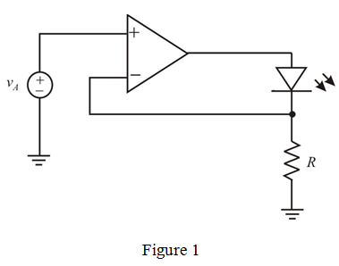

Refer to Figure 17.38 in the textbook for the diode bridge used in the design of an AC voltmeter.
This circuit results a current of flow through the moving coil meter, M. Thus, the meter provides a reading that is proportional to the average of the absolute value of the input voltage,  .
.
The current through the meter is,
Replace the bridge with LED (light emitting diode). The current is independent of the diode’s nonlinearities and variability.
The following circuit arrangement that provides a current proportional to to a light-emitting diode.

By the virtual ground, the voltage at the inverting terminal is  .
.
Therefore, the current is, .